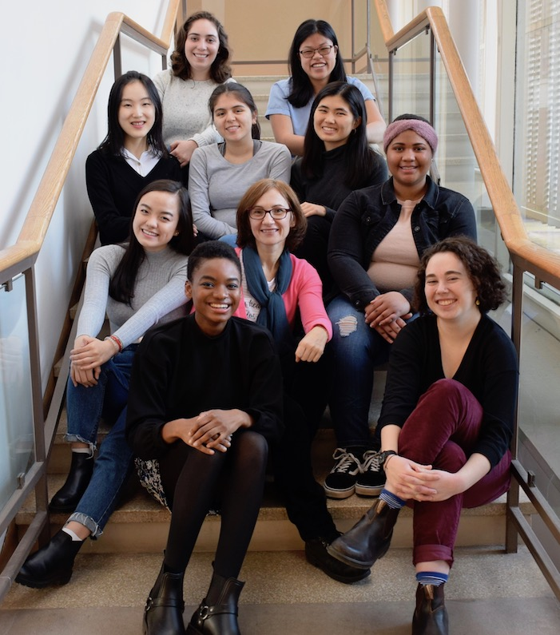
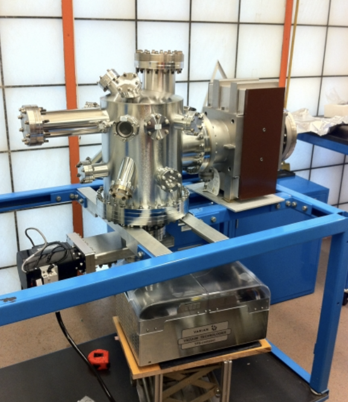

In May 2020, I joined the Fluid Interfaces group at the MIT Media Lab. Our project, Saving Face, is a mobile application to reduce hand-to-face transmission of the SARS-CoV-2 virus. This scalable technology employs everyday earbuds to warn users when they are about to touch their faces.
As the project co-lead and machine learning research assistant, I supported a group of 11 undergraduates, formulated sub-teams’ research goals, and led weekly team meetings. I organized data collection efforts, constructed pipelines to process raw signal data, engineered the central machine learning model, and deployed the Saving Face mobile application to the App Store. These efforts have the potential to reach billions of users and slow the spread of COVID-19.
Rojas, C., [et al., including Van Tuyl, M.], “A Scalable Solution for Signaling Face Touches to Reduce the Spread of Surface-based Pathogens.” Proceedings of the ACM on Interactive, Mobile, Wearable and Ubiquitous Technologies, vol. 5, no. 1.
Van Tuyl, M. “Saving Face: A Gesture Recognition Application to Fight the Spread of COVID-19.” Conference presentation presented at Wellesley College Ruhlman Conference, Wellesley, MA, May 2021.
Van Tuyl, M. “Machine Learning for Gesture Recognition to Reduce COVID-19 Transmission.” Poster session at UMass Amherst Voices of Data Science Conference, Amherst, MA, February 2021.
Van Tuyl, M. “‘Don’t Touch Your Face’: Designing A Scalable Mobile Technology to Support the Fight Against COVID-19.” Poster session at Harvard National Collegiate Research Conference, Cambridge, MA, January 2021.
From September 2018 through August 2019, I participated in the Wellesley Sophomore Early Research Program and Science Center Summer Research Program as a member of the Wellesley Cred Lab. Due to the rise of misinformation during the 2016 United States presidential election, the lab was particularly interested in investigating user responses to online credibility signals.
I scraped data from search engine result pages to study interactions between content on Google and Wikipedia, conducted an extensive literature review on website credibility, and designed and ran user studies to identify the factors people use to evaluate the reliability of online news sources.

Van Tuyl, M., & Kawakami, A. “Googling the News Source: What Users Want to Know When Assessing Credibility.” Conference presentation presented at Wellesley College Ruhlman Conference, Wellesley, MA, May 2019.
Van Tuyl, M. "Credibility in the Age of Misinformation: How Internet Users Assess Website Credibility." Poster presentation at Wellesley College Science Center Summer Research Program, Wellesley, MA, August 2019.
From 2017 to 2018, I worked as a member of the Wellesley College Physical Chemistry Lab. Our lab was particularly interested in the chemical reactions that occur within ice in low-pressure environments.
I conducted experiments in an ultrahigh vacuum chamber and analyzed the resulting mass spectrometer data to study photolysis and radiolysis reactions. The aim of these experiments was to provide a better understanding of the formation of molecules and stars in the interstellar medium.

Arumainayagam, C., [et al., including Van Tuyl, M.], “Detection of Methoxymethanol as a Photochemistry Product of Condensed Methanol.” Monthly Notices of the Royal Astronomical Society: Letters, vol. 485, no. 1, 2019, pp. 19-23.
Van Tuyl, M., Zhang, C., & Arumainayagam, C . “First Detection of Methoxymethanol as a Photolysis Product of Methanol.” Poster presentation at the Annual Northeast Student Chemistry Research Conference, Boston, MA, April 2018.